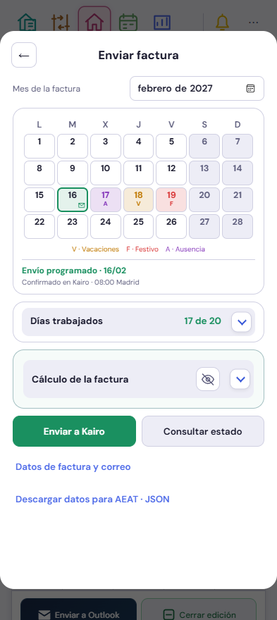
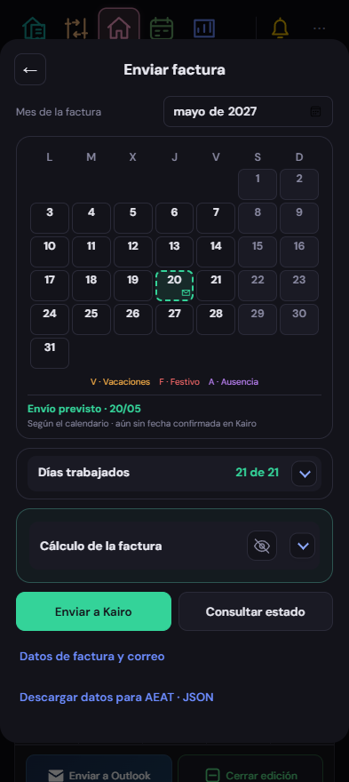
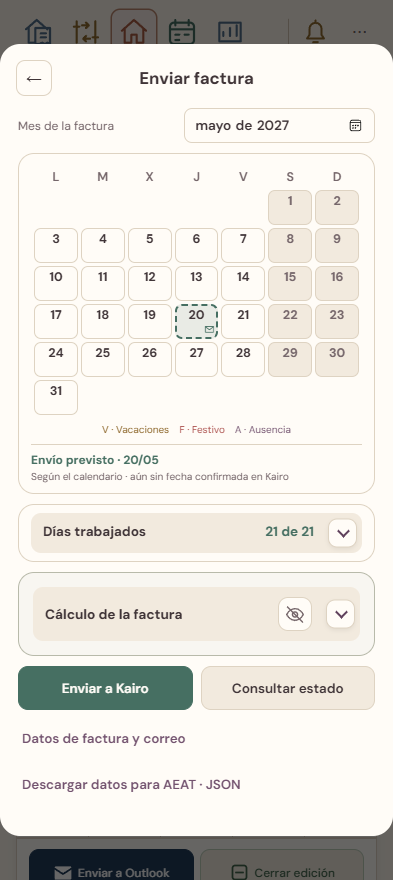

Previsión y programación confirmada

Interfaz real con datos ficticios. Vacaciones, festivos y ausencias visibles, sin eventos puntuales. La fecha prevista se distingue de la confirmada por Kairo. El cálculo económico se conserva desplegable.



Solo se recapturan las cuatro escenas de la ventana de factura y su continuación. El resto del atlas y sus revisiones se conservan. Estos ejemplos no emiten ni programan facturas reales.